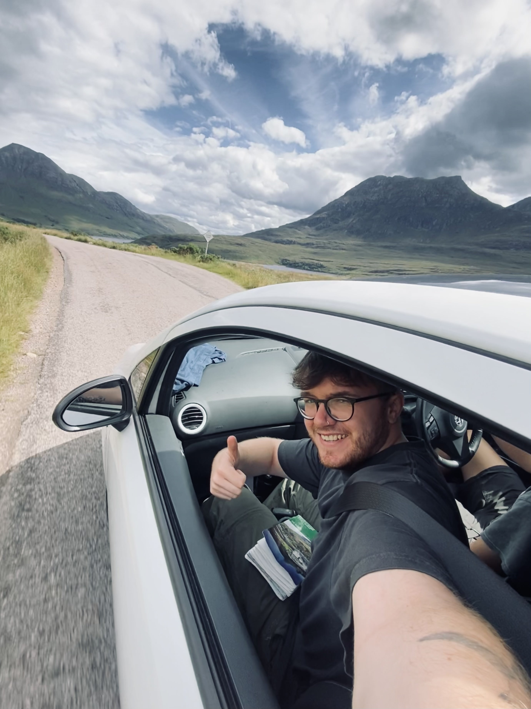

About Me
Hi! I'm Joe, a first-year PhD student completing an interdisciplinary PhD in cognitive psychology and computer science, currently based at Northumbria University, Newcastle. My project focuses on how theories of joint action can be applied to pedestrian dynamics and inform microscopic agent-based crowd simulations.
I created this website to showcase my projects and ideas. I'm always looking to collaborate and learn new skills.